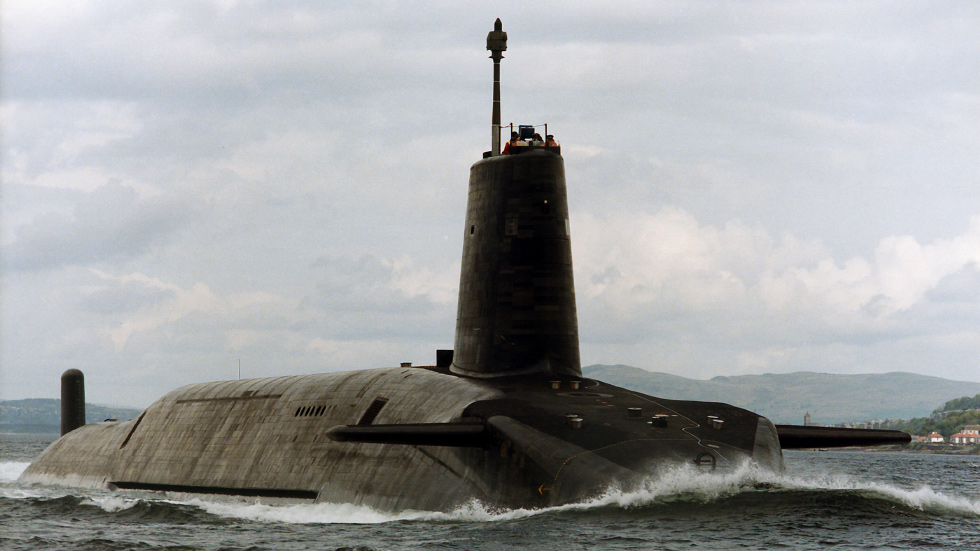
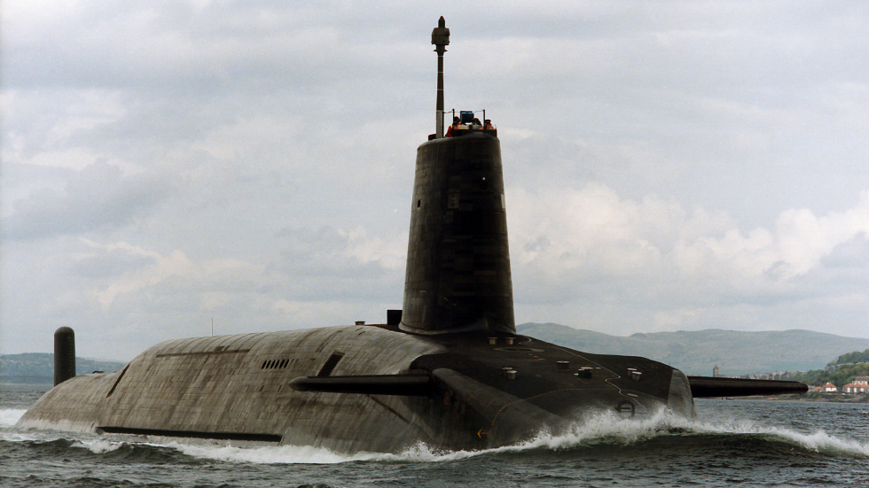
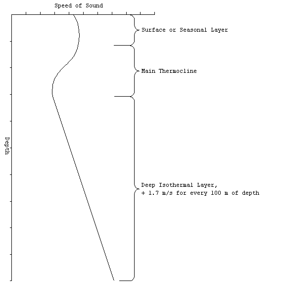
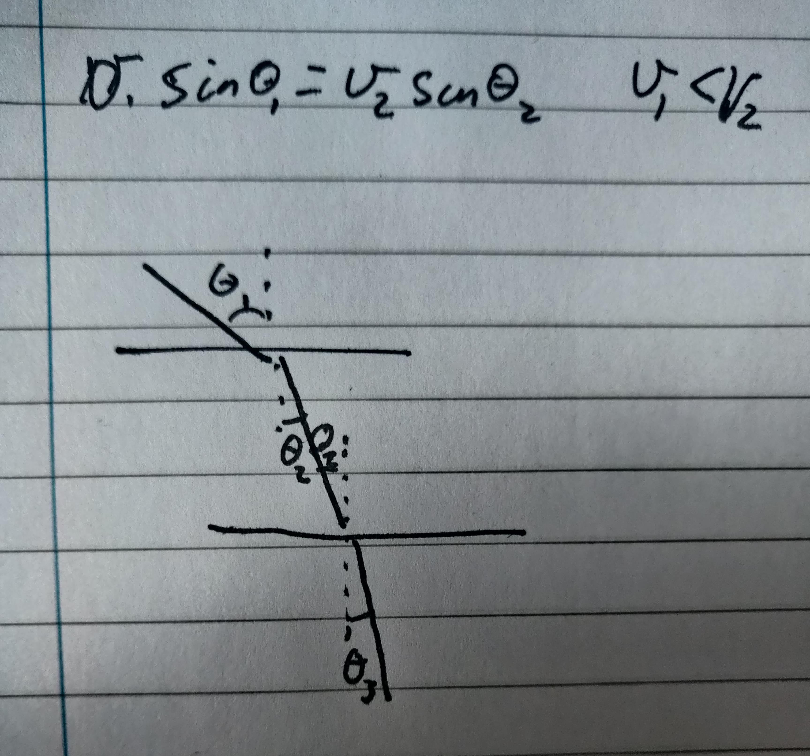

Albert Stark
 

Submarine operations and stealth
A key component of pretty much every nations military force is its submarine complement. The US, UK, Russia, China and France all operate a combination of ballistic missile submarines as part of their nuclear detterant, and hunter-killer submarines that are used more univerally in the task of prottecting carriers, patrolling territorial waters and escorting freindly vessels.However, a key question arrises. How do you keep these assets hidden? Any ship with a sonar could potentially detect these extremely valuable assets. So how is it that they are able to operated pretty much undeteced? How do they hide in plain sight?
It's not often that I find a problem that just sits in the back of my mind begging to be solved, but on 26 Dec 2020 Destin Sandler of the channel Smater Every Day on Youtube published this video. In it, he interviews a SONAR operator aboard the USS toledo and the topic of US navy manual ES310 "Introduction to naval weapons engineering" comes up. A redacted version is available online here.
Specifically it is the redacted section where it says "Above the layer, the positive gradient will produce a surface duct as previously described. When rays penetrate below the layer, they are deflected downward. Therefore, the rays diverge above and below the layer. Beyond a certain minimum range, the rays from the source will never reach locations just below the layer. This is called the shadow zone. It is a favored depth for submarines to operate at for just this very reason. The optimum depth to operate at, called best depth (BD), is a function of the layer depth. The best depth can be calculated from". But no equation is given, it has been redacted.
So I wanted to try and find that equation.
An initial foray
In an earlier section of the section of ES310 we are informed of the fact that the speed of sound in water varies with, amongst other things, depth. As seen in this graphic:
Those other things are important because they include the heating of the surface as a consequence of the sun being out, local salinity, the ambient temperature and the pressure. Those last two decrease and increase with depth respectivly. Regardless of those facts, Vsound is a function of depth.
But even still the Vsound profile shown in the graphic is quite complicated. So let us have a simpler profile. The simplest possible case is that Vsound remains constant. In this case the waves will radiate outward from the sonar emmiter in a spherical shape and travel at a constant speed. The next level up in the compexity scale is the case of Vsound = K*Depth. Where K is a constant. In this case too, the signal will simply radiiate outward spherically, although this time increasing speed with depth.
So what happens if we let Vsound = K*Depth^2. Here the speed of sound will increase with depth, and thus the sound will be deflected constantly downwards. As shown in the image.

Here we are introduced to the idea of a minimum safe range where a submarine can avoid detection, Rmin. Which in this instance can be calculated as:
Compicating things
The best attempt at creating a function similar to the one shown in the earlier diagram I had is this:The specific function used in this instance was:
Vsound = (Depth - 1)/20 - (3Depth - 3)/2 * (3^((Depth - 1)/500) + 10^-((Depth - 1)/500)) + 1500
Where I eyeballed the range and arbitrailly decided that 1 unit = 1 meter was good enough because why not.
References
I use my own citation system here because I like it;[author] | [title] | [reference] | [date published] | [date retrieved] | [notes (optional)]
Unless otherwise stated, all dates in this blog should be considered to be in dd/mm/yyyy.
Text references:
- Smarter Every Day | How Sonar Works (Submarine Shadow Zone) - Smarter Every Day 249 | https://www.youtube.com/watch?v=AqqaYs7LjlM | publshed 26/12/2022 | retrieved 19/10/2022
- US Navy, FAS | ES310 Intraduction to naval weapons engineering U/W Acoustics & Sonar pp198-205 | https://man.fas.org/dod-101/navy/docs/es310/SNR_PROP/snr_prop.htm? | published 20/01/1998 | retrieved 19/10/2022
Image references:
- Royal Navy | Submarines, strength beneath the waves | https://www.royalnavy.mod.uk/the-equipment/submarines | published ? | retrieved 19/10/2022 | from left to right the astute, vanguard and trafalgar class submarines of the royal navy. Each image retrieved from the respective areas of the website.
- US Navy, FAS | ES310 Intraduction to naval weapons engineering U/W Acoustics & Sonar pp198-205 | https://man.fas.org/dod-101/navy/docs/es310/SNR_PROP/snr_prop.htm? | published 20/01/1998 | retrieved 19/10/2022